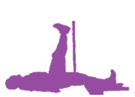
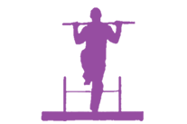
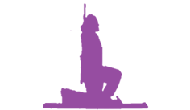
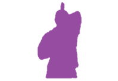
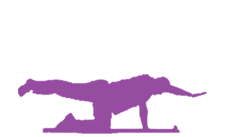
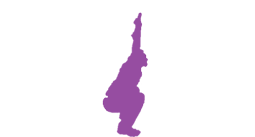
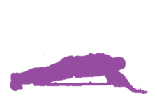

|
Denge testinde; Gözler açık olan testte iyi performansına karşın gözü kapalı testte kötü performans sergilemiştir. Propriyooseptif duyu algısı iyi değildir. İyi sağlanmayan denge sporcunun yön değiştirme, mücadele sporu, atış yaptığı durumlarda performans düşüklüğü yaratır. FMS, Aktif Düz Bacak Kaldırma değerlendirmesi aşamasında; SAĞ taraf “2” skoru almıştır. Hamstring kasında kısalığı işaret eder. Bacak ve pelvise bağlanan hamsting kasının kısalığında, yürüme biyomekaniği bozarak sporcuyunun performansını negatif etkiler ve yaralanma riskini arttırır. Düzeltici egzersizler ile hem gövde, alt ve üst ekstremite güç, kuvvet değerlerini olumlu olarak iyileştirecektir ve yaralanmaya yol açabilecek kısalık, kas dengesizliği gibi negatif etkileri de ortadan kaldıracaktır. Gövde Rotasyonu değerlendirmesi aşamasında; SAĞ taraf “2” skoru almıştır. Gövde, alt ve üst ekstremitelerin SOL kısımlarındaki yetersiz stabilizasyonu işaret eder. Sporcunun pas verme, koşma gibi gövdesinin döndüğü hareketlerde, stabilizasyon bozulmuştur.

1

1

1

1

1

1

1 |
|---|
Reaksiyon
11.6sn
İvmelenme
100sn
Toplam Süre
22sn
DÜŞÜK ORTA İYİ
Fonksiyonel kapasite analizi testlenmediği için veri gösterilemiyor.